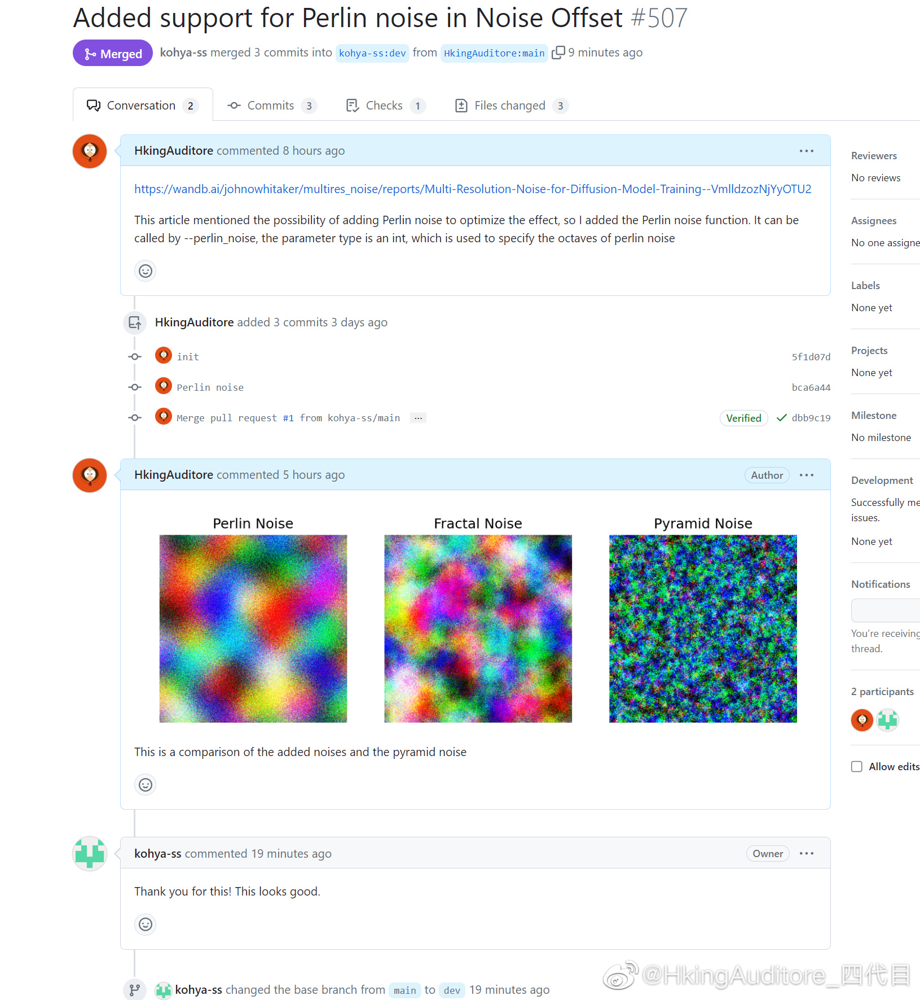

晚安
上个月发的两篇文章都入围藤子知识库了，恰了三百块块钱的横财，还能发两百块的红包。下次没钱了我就去发文章。
但是论文的返修又来了，好无尽的痛苦，没完没了，感觉这次所谓顶刊的专家既没有认真看你的文章，也没给出什么用建设性的意见。论文诞生之初就是为了加快人类知识交流传播的吧，感觉这种为了一些所谓格式和规范改动上一年的返修完全是让新思想坐牢。老师也吐血，我也吐血。也许这就是我不能做学术的原因吧，被条条框框限制真不是滋味。
今天给kohya的库提了个改进的算法，居然被采用了，很开心，想着以后大家用sd训练模型就能用到我的东西。这次ai绘画浪潮看到这么多人贡献知识、共建开源很有人类公社的感觉。好多新东西昨天提出来，今天被合入主干，明天被优化。随着人越来越多，sd也越来越完善。虽然效果还不如隔壁闭源的mj，但工具链属实是爆杀隔壁了。我相信互联网精神永远不死。
上个月发的两篇文章都入围藤子知识库了，恰了三百块块钱的横财，还能发两百块的红包。下次没钱了我就去发文章。
但是论文的返修又来了，好无尽的痛苦，没完没了，感觉这次所谓顶刊的专家既没有认真看你的文章，也没给出什么用建设性的意见。论文诞生之初就是为了加快人类知识交流传播的吧，感觉这种为了一些所谓格式和规范改动上一年的返修完全是让新思想坐牢。老师也吐血，我也吐血。也许这就是我不能做学术的原因吧，被条条框框限制真不是滋味。
今天给kohya的库提了个改进的算法，居然被采用了，很开心，想着以后大家用sd训练模型就能用到我的东西。这次ai绘画浪潮看到这么多人贡献知识、共建开源很有人类公社的感觉。好多新东西昨天提出来，今天被合入主干，明天被优化。随着人越来越多，sd也越来越完善。虽然效果还不如隔壁闭源的mj，但工具链属实是爆杀隔壁了。我相信互联网精神永远不死。
- 